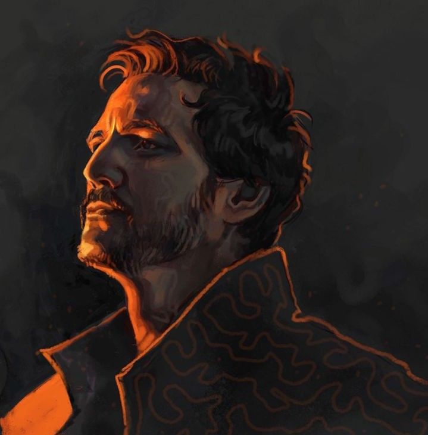
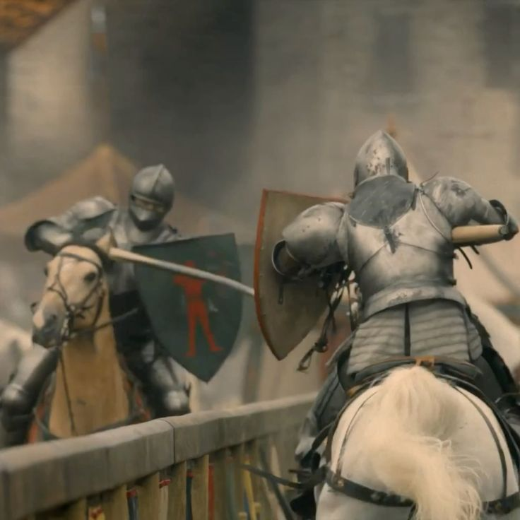

Mordren est un chevalier vaniteux, obsédé par la compétition, l'idée de gagner, et de prouver la valeur de son nom.
Il est brave, courtois et galant, souriant et avenant, capable de compréhension. Il est impatient et bravache aussi, mais il se soigne. Il est noble, il est fier, et ne laissera personne traîner son nom dans la boue.
Pour autant, il fait l'aigreur de son père : légèrement indiscipliné, plus enclin à traîner dans les bars avec un Noctival qu'à courtiser pieusement un bon parti Velharen Elandryn ou Velarys, Mordren aime plaire aux filles tant qu'elles ne s'imaginent pas avoir la moindre chance avec lui. Il aime gagner aux joutes autant pour le trophée que pour le bar après. Il connait autant de poésie que de jurons d'écuries.
Le résumer n’est pas chose aisée : il existe le Mordren de nuit, tapageur, bruyant, qui se soule et hurle haut et fort les pires insanités, et le Mordren de jour, courtois et poli, à cheval sur l’étiquette, redoutable sur un terrain de joute comme sur le champ de bataille.
Il y est d’ailleurs courageux, presque téméraire, sans autre pitié que celle du code de chevalerie, qu’il respecte à la lettre. De même, l’oiseau de nuit est également un être de galanterie féminine, presque charmeur, presque poète.

